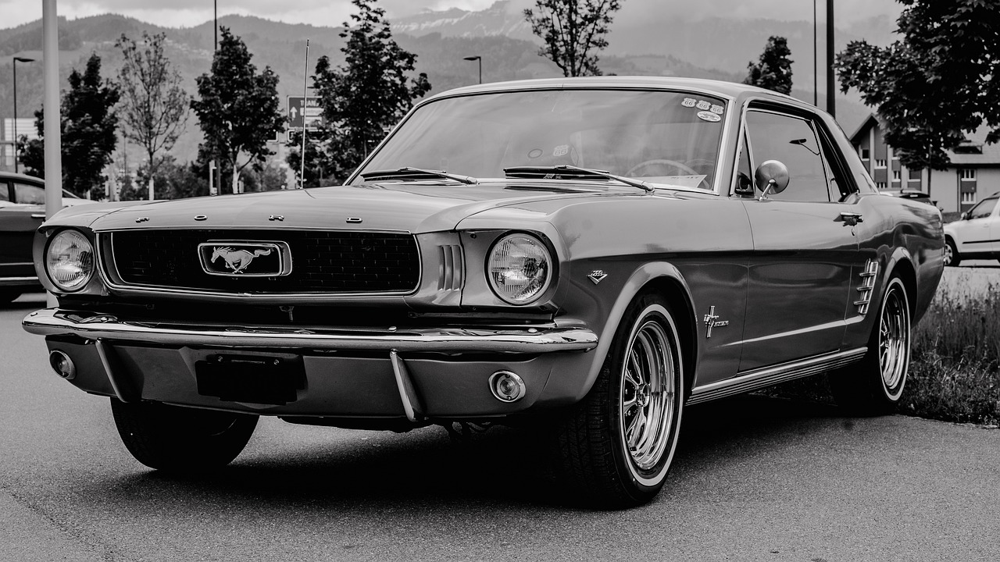
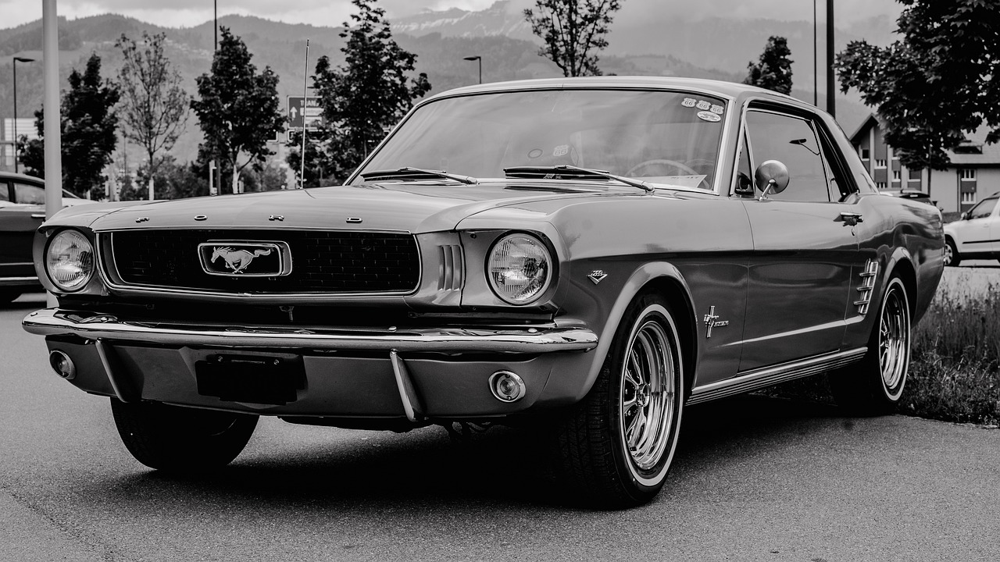

Mustang antiga geração
postado em 07 de maio 2024 

O Mustang de 1969 é considerado por muitos entusiastas como uma das versões mais icônicas da história do modelo. Lançado em meio à "Era Muscle Car", o Mustang '69 se destacava por seu visual agressivo e suas poderosas opções de motor. Sob o capô, os clientes podiam escolher entre diversos motores V8 de alto desempenho. A opção mais poderosa era o famoso V8 de 7,0 litros (428 cubic inches) que produzia incríveis 335 cavalos de potência. Outras opções incluíam os blocos de 5,8 litros (351 cubic inches) e 6,4 litros (390 cubic inches), oferecendo uma excelente relação entre potência e torque. Em termos de estilo, o Mustang 1969 adotou linhas mais musculosas e uma aparência mais robusta em comparação aos modelos anteriores. O capô frontal ficou mais pronunciado, as laterais ficaram mais largas e a parte traseira ganhou um visual mais imponente. Esse design marcante tornou o Mustang '69 instantaneamente reconhecível.
Leia maisMustang nova geração
postado 07 maio 2024

O Ford Mustang de 2017 representou mais uma evolução deste ícone da indústria automotiva. Mantendo sua essência de muscle car, o Mustang 2017 recebeu atualizações que o tornaram ainda mais moderno, eficiente e tecnológico. Sob o capô, o Mustang 2017 continuava a oferecer opções de motores V8 e EcoBoost, com desempenho ainda mais aprimorado. O V8 de 5,0 litros, por exemplo, passou a gerar 460 cavalos de potência, garantindo uma aceleração vigorosa e emocionante. Exteriormente, o Mustang 2017 adotou um design refinado, com linhas mais aerodinâmicas e detalhes mais esculturais. A grade frontal ganhou uma forma mais arrojada, enquanto os faróis e lanternas traseiras receberam novos elementos de iluminação de LED, conferindo ao carro uma aparência mais agressiva e sofisticada.
Leia mais